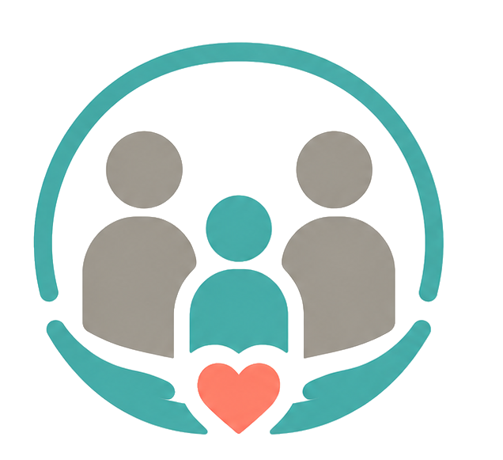

Evaluación Familiar del Adolescente
Pasa el cursor para ver el detalleUn proceso clínico breve, de 3 sesiones, para entender qué está sintiendo tu hijo o hija hoy, qué bloquea la confianza en casa y qué pasos concretos puedes dar. Terminas con un informe escrito y un plan.
Ver en detalle →